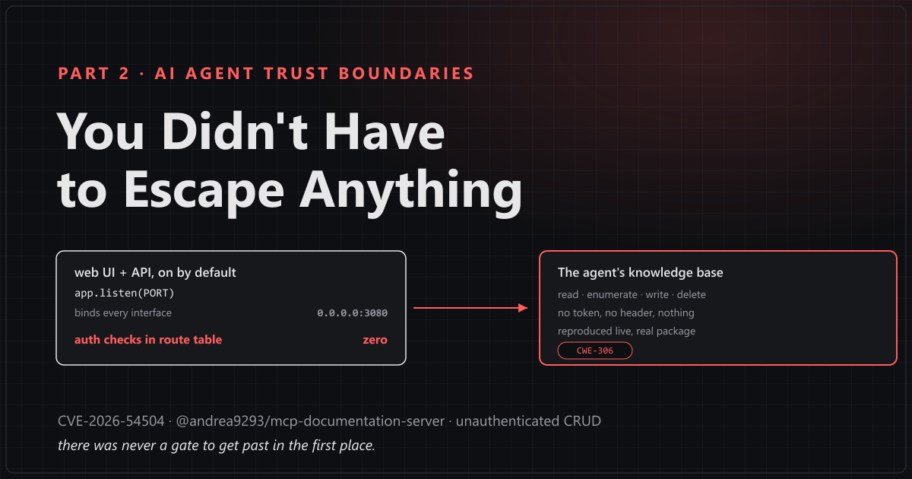
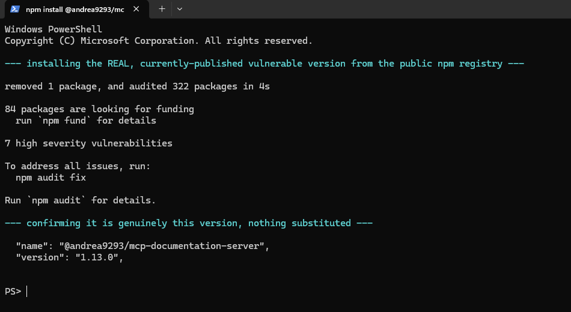
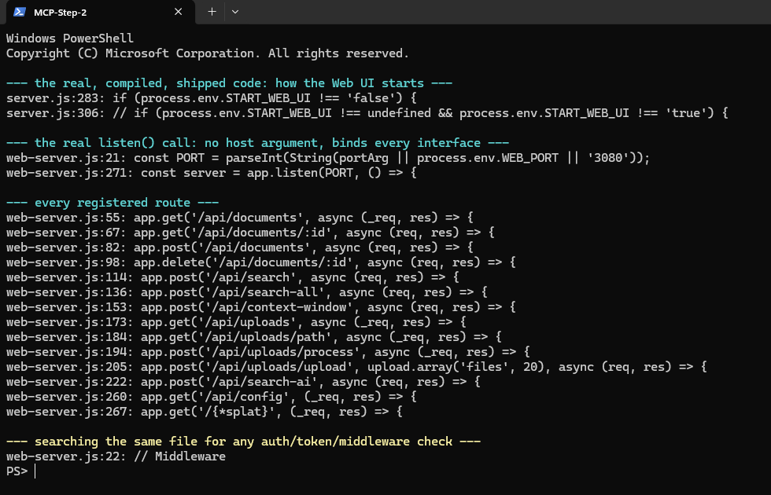
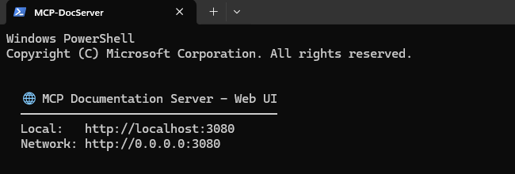
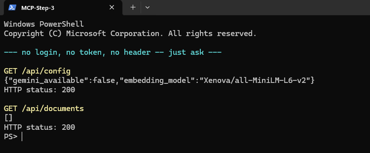
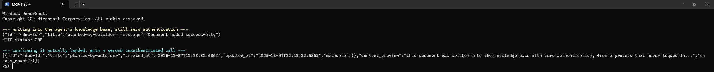
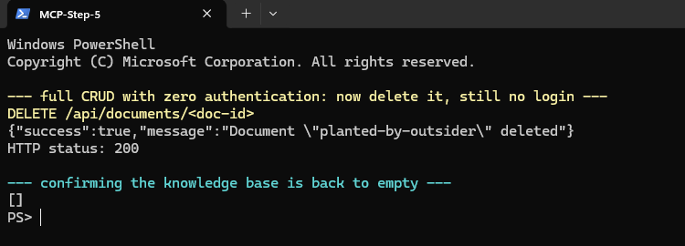

Part 2 of 2: the conclusion of a series on AI agent trust boundaries
You Didn't Have to Escape Anything
Part 1's sandbox confined the filesystem and nothing else. The network path to this was open before anyone broke a single thing. Then it was fixed, and the fix is the second half of the story.

What mcp-documentation-server actually is
@andrea9293/mcp-documentation-server is a TypeScript MCP (Model Context Protocol) server: a local document-management and semantic-search tool that AI coding agents connect to over MCP so they can store, search, and retrieve project documentation with embeddings. It's a real, actively maintained package, published by a single maintainer (andrea9293), currently at version 1.15.3 on npm with a clean release history back through 1.0.0. Alongside its MCP interface it ships an optional web UI: a small Express server meant to let a human browse and manage the same document store from a browser.
That web UI is the whole story. It starts automatically, binds to every network interface by default, and checks nothing before answering a request.
No escape required
Part 1's sandbox policy, quoted directly from that piece: "writes outside the workspace are denied, and everything else (process execution, file reads, loopback networking) is allowed by default." That sandbox, like every sandbox in Part 1's comparison table, only ever confined the filesystem. Network access to other local services was never restricted, escaped or not.
That matters here specifically because this bug doesn't require an agent, a sandbox, an escalation, or an escape at all. Anyone who can reach the port can read, write, and delete an AI agent's knowledge base directly. No prompt injection needed to get an agent to do it on your behalf; you can just do it yourself. The "escalation" step that took up most of Part 1 doesn't exist in this story because there was never a gate to get past in the first place.
A reproduction I actually ran, against the real thing
<doc-id> by the capture script before the terminal is screenshotted, purely so a meaningless local identifier isn't published verbatim. Every HTTP call shown, including the delete in Screenshot 6, is still made with the real ID the server actually returned.Installing the exact vulnerable version, from the real registry:

The real, shipped, compiled code, not a paraphrase of it:

Starting it with nothing but the defaults:

No login, no token, no header, just asking:

Writing into the knowledge base the same way:

And deleting it, closing the loop on full unauthenticated CRUD:

The paperwork
Table 1: vulnerability summary.
| Field | Value |
|---|---|
| CVE | CVE-2026-54504 |
| CWE | CWE-306 (Missing Authentication for Critical Function), CWE-668 (Exposure of Resource to Wrong Sphere) |
| CVSS 3.1 | 8.8 High, vector AV:A/AC:L/PR:N/UI:N/S:U/C:H/I:H/A:H per the CNA advisory. |
| Affected | >= 1.13.0, < 1.13.1 |
| Fixed in | 1.13.1 |
| Scope confirmed | Read, enumerate, write, and delete documents, confirmed live against the real package for this piece. The advisory explicitly states this does not provide remote code execution; I didn't attempt to find any, and nothing here should be read as a claim that one exists. |
| EPSS / KEV | EPSS 0.57% (45.2nd percentile) at last check. Not in CISA's Known Exploited Vulnerabilities list. |
AV:A means adjacent-network-only, but the same advisory's own description frames the service as reachable from "LAN, VM network, container bridge, VPN, or another routed network," which reads broader than strictly adjacent. Check the GHSA advisory's own vector before citing this elsewhere.Table 2: disclosure timeline.
| Date (2026) | Event |
|---|---|
| Jun 4 | GHSA-6f5r-5672-72j7 published on GitHub, about three months before the CVE/OSV publish date below; which date better reflects the actual disclosure isn't clear from either page |
| Sep 17 | CVE-2026-54504 published |
| Sep 30 | Advisory last modified (status shown as "Deferred" on the aggregator I checked; not explained there) |
| Jun 4 | 1.13.1 published to npm, the same day as the GHSA, per the registry's own publish time. It changes the Web UI's default bind address. It does not change the default-on behavior; see the patch below |
It's not a documentation-server problem
The same shape, trust whatever's local, shows up across the Model Context Protocol ecosystem in 2026, not just in one small package from one maintainer:
MCP SDKs: the bug lives one layer below the server
Three official language SDKs used to build MCP servers shipped the same class of flaw, meaning any server built on top of them inherited it by default:
Go SDK (CVE-2026-34742): DNS-rebinding protection was off by default for HTTP-based servers using StreamableHTTPHandler or SSEHandler. A malicious website could use DNS rebinding to get a victim's browser to bypass same-origin restrictions and reach a local MCP server directly. Fixed in 1.4.0, where the protection is now on by default when binding to localhost; stdio-transport servers were never affected. CVSS 3.1 8.1, CWE-1188 (Initialization of a Resource with an Insecure Default). A separate, later, non-CVE fix in the same codebase corrected a case-sensitivity bug where IsLoopback compared hostnames against literal lowercase "localhost," meaning a request claiming Host: LocalHost was rejected even legitimately; that fix is not confirmed to be in the same 1.4.0 release.
Java SDK (CVE-2026-35568) and Ruby SDK (CVE-2026-63118): the same underlying pattern, missing or insufficient Host/Origin header validation on HTTP transport, letting a browser steered by DNS rebinding reach a locally-bound MCP server. Severity reporting on the Ruby SDK finding is inconsistent across sources I checked, one lists CVSS v4 6.9, another's own title calls it critical, so don't treat either number as settled without checking the advisory directly.
Real products built on top
Jan (CVE-2026-66005): a popular local AI app's API server dropped its trusted-hosts allowlist entirely when bound for LAN access, via a wildcard that matched every Host header including attacker-controlled ones, making DNS rebinding straightforward against its MCP tool-invocation surface.
Apollo MCP Server (CVE-2026-35577): versions before 1.7.0 skipped Host header validation on StreamableHTTP transport, the same DNS-rebinding exposure, fixed by enabling that validation by default.
CircleCI's MCP server: three advisories from the same research, Pluto Security's "Vicious Circle." The maximum-severity one, CVSS 10.0, is unauthenticated command injection through a crafted filename, reaching the operator's own CI pipeline and credentials, not the header issue below. A separate, lower-severity flaw, CVSS 8.3, is the Host/Origin gap: the server's allowlist never checked either header, so a malicious website a developer merely visits can reach the local server through DNS rebinding and drive it with the operator's own API token.
9router (GHSA-4922-8r65-fq26): an isLocalRequest() gate that, like the pattern throughout this list, trusted the client-supplied Host header instead of the actual socket peer address. Chained with a default password and unvalidated MCP plugin arguments, that combination reached remote code execution. The advisory's own suggested fix: check the socket address, not the header.
Three ordinary ingredients, tested
Part 1's thesis: an attacker-controllable input, a dangerous capability, and unchecked ambient authority, combined, is what turns a design shortcut into a critical vulnerability, not weak sandboxing technology specifically. Here, the same three ingredients show up in their most extreme form: attacker-controllable input needs no prompt injection at all, just network reach; the dangerous capability is full read/write/delete control of an agent's actual knowledge; and the unchecked ambient authority isn't a broken check like Part 1's Host-header trust, it's the complete absence of any check, the honor system with nothing in it at all.
That's the real finding here: Part 1 had a lock, picked badly. This has no lock. If the thesis is that unchecked ambient authority is the recurring failure mode rather than any one vendor's mistake, finding it in its purest form on the very next real target tested is a stronger confirmation than finding another broken-lock variant would have been.
Then it was fixed
Everything above is the bug. The rest of this piece is the patch, because a fix is the one place a project writes down what it thinks the boundary is.
dist/web-server.js and dist/server.js files. That's a static read of shipped code. I did not run the patched versions, I did not probe them, and nothing below is a claim that a new vulnerability exists in any current release. Where I'm describing what the code does, it's from the source; where I'm drawing a conclusion from that, I say so. The Part 1 fix is described only from the public record quoted in Part 1, since that codebase was never available to me.The fix, in full
The entire security-relevant change between 1.13.0 and 1.13.1 is in one file. This is the real diff, trimmed only of the cosmetic banner lines around it:
export async function startWebServer(portArg, sharedManager) {
const PORT = parseInt(String(portArg || process.env.WEB_PORT || '3080'));
+ const HOST = process.env.WEB_HOST || '127.0.0.1';
...
- // Start server
- const server = app.listen(PORT, () => {
+ // Start server (bind to HOST, default 127.0.0.1 for security)
+ const server = app.listen(PORT, HOST, () => {
...
+ if (HOST === '127.0.0.1') {
+ console.log(` ℹ️ Set WEB_HOST=0.0.0.0 to expose on all interfaces`);
+ }The patch: a host argument where there wasn't one, a loopback default, and an opt-in environment variable for the old behavior.
That is a correct fix for the bug as the CVE describes it. The one-line vulnerability class named above was app.listen(PORT) with no host argument; the patch supplies the argument. A device elsewhere on the LAN, VPN, or container bridge can no longer reach the port by default, and the advisory's adjacent-network vector no longer applies to a default install.
It's also worth being exact about what the patch does not touch, because that's the part this piece is about:
- The route table is unchanged. The same routes are registered in 1.13.1 and in 1.15.3, with the same handlers. Between 1.13.1 and 1.15.3 the only change to this file is the startup banner moving from
console.logtoconsole.error. - No identity check was added. The middleware section is still body parsing and static file serving. The fix changes where the server listens, not who it listens to.
- The web UI is still on by default. The check in
server.jsis stillprocess.env.START_WEB_UI !== 'false'in all three versions I read, and the current README still documents the default astrue.
The registry also settles something the advisory pages didn't: 1.13.1 was published on June 4, 2026, the same day as the GHSA, with 1.13.2 eleven minutes later and 1.14.0 about two hours after that. The fix was fast.
Two fixes, two different ideas of the boundary
Set that next to the fix from Part 1. DeepSeek Harness had a control API that trusted a client-supplied Host header. Its fix, per the public record, replaced that check with a one-time token printed at startup, exchanged for a signed cookie that every later call must carry. Part 1 summarized it this way: the fix "stops asking a request what it claims to be and starts asking it to prove it was present when the process started."
Table 3: the two fixes compared.
| Part 1: DeepSeek Harness | This piece: mcp-documentation-server | |
|---|---|---|
| What failed | A check that trusted the wrong input (CWE-807) | No check at all (CWE-306), on every interface (CWE-668) |
| Fix shape | Proof of presence: startup token, signed cookie on every call | Narrower reach: bind to 127.0.0.1 unless WEB_HOST says otherwise |
| Ingredient removed | Unchecked ambient authority | Network-wide reachability of the input |
| Who is trusted after the fix | Whoever holds the token | Whatever can open a connection on the local machine |
| Where the boundary now sits | At the request | At the network interface |
One fix added a lock. The other moved the door indoors. Both close the reported bug, and I'm not arguing the second one is wrong: for a single-maintainer tool whose stated threat was exposure to the local network, binding to loopback is the proportionate, standard remedy, and it shipped the same day as the advisory.
But the series thesis makes a specific prediction about which of those two shapes ages better. The thesis was that these failures come from three ordinary ingredients together: an attacker-controllable input, a dangerous capability, and unchecked ambient authority. The Part 1 fix removes the third ingredient outright. The fix here leaves the second and third exactly as they were and shrinks the first: the set of things that can supply input goes from "anything on the network" to "anything on this machine."
Whether that's enough depends entirely on what else lives on the machine, and this is where the series folds back on itself. Part 1's whole subject was a class of local process that isn't the user: an AI agent in a sandbox that confined the filesystem and, by policy, left loopback networking open. Every sandbox in that piece's comparison table made the same choice. And the documentation-server's own README now recommends its local REST API as the preferred way for coding agents to use it, with plain unauthenticated calls to 127.0.0.1:3080, as a feature.
What the series actually established
Table 4: the series, on one page.
| Piece | Target | State of the lock | Evidence |
|---|---|---|---|
| Part 1 | DeepSeek Harness control API (CVE-2026-82533), plus four related sandbox escapes | A lock, picked: trust decided by a header the caller writes | Stand-in reproduction with a real OS-level boundary; public records for the rest |
| This piece, first half | mcp-documentation-server 1.13.0 (CVE-2026-54504), plus SDK and product advisories | No lock: every route open on every interface | Live reproduction against the real published package |
| This piece, second half | The two fixes | One lock added, one door moved | Static diff of published versions; public record for Part 1's fix |
The thesis held up in the way that matters: it described a bug in software it wasn't written about (the first half of this piece), and it gave a useful way to read a patch (the second half), by asking which of the three ingredients the patch actually removes. That second use turned out to be the more practical one. "Is it fixed?" has a yes or no answer that's tied to one CVE. "Which ingredient did the fix take away?" tells you what the software still assumes.
The limits are the same ones Part 1 admitted and they haven't gone away. This is two reproduced cases and a larger set of advisories read secondhand, chosen because they fit. It can't show that the pattern is the dominant cause of agent-adjacent vulnerabilities, only that it recurs often enough to be worth checking for first. Several of the supporting advisories in Part 1 and above carry disagreements between sources that I flagged and never resolved. And the comparison of the two fixes leans on a description of the Part 1 fix that I couldn't verify against code.
The last checklist
For finding this kind of bug, read alongside Part 1's list: before running any local tool, agent-adjacent or not, check what it binds to by default, not what its documentation claims; app.listen(PORT) with no host argument is a one-line vulnerability class, and it's worth grepping your own dependencies for it directly rather than trusting a changelog; treat "local-only" as a claim to verify, not a property to assume, especially for anything that starts a web server automatically without being asked; and if a tool exposes an MCP interface built on a third-party SDK, check that SDK's own security advisories separately, the vulnerability may not be in the tool's code at all.
For reading a fix, your own or someone else's:
- Name the ingredient the patch removes. Input reach, capability, or ambient authority. If it's only reach, write down who can still reach it.
- Treat "binds to localhost" as a network control, not an authentication control. It answers where a request can come from. It says nothing about which local process sent it, and on a machine running agents, browsers, containers, and dev tools, those are not all the user.
- If a local API can change or delete state, give it a credential. A startup token is cheap, it's the shape Part 1's fix took, and it turns "anything local" into "the client I started."
- Read the changelog claim against the diff. An earlier draft of this piece repeated a summary saying the default-on behavior had been addressed. The diff is a few lines long and says otherwise.
- Check the default, not the option. A service that's off until asked for is a smaller surface than one that's on until told otherwise, whatever interface it binds.
- Line your sandbox policy up against your local services. If the sandbox allows loopback and a local service trusts loopback, those two decisions are one boundary, and somebody should own it as one.
Two pieces, one broken lock, one missing lock, and two repairs. The bugs were different every time. The assumption underneath them wasn't: that being nearby is the same as being allowed.